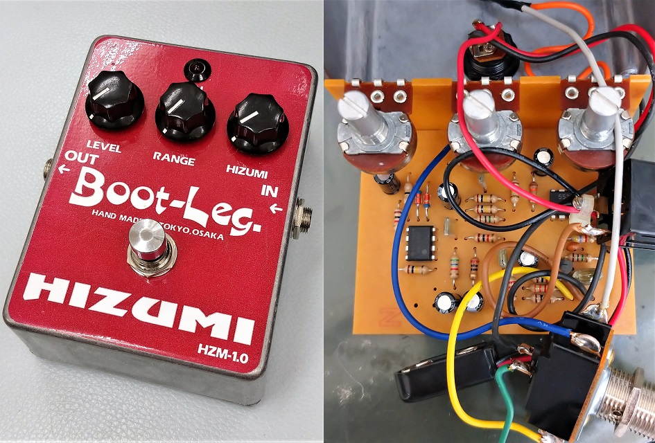
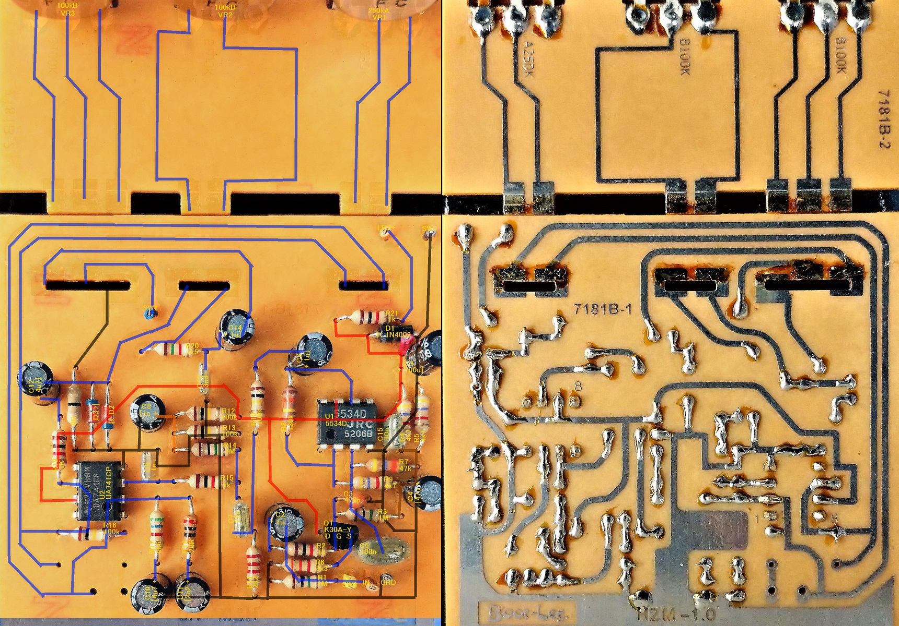
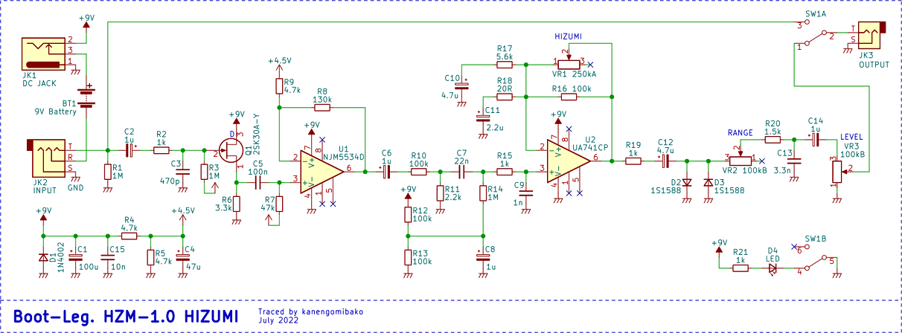
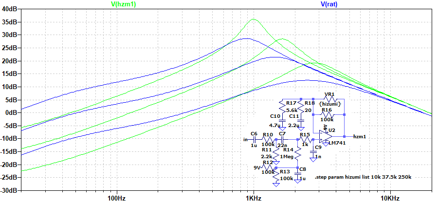
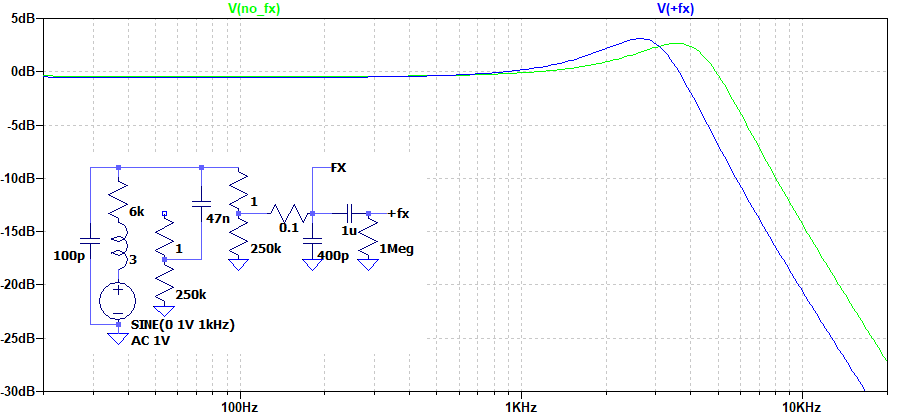

Boot-Leg. HZM-1.0 HIZUMI 解析・改造
2022年08月17日 カテゴリー：修理・改造・解析

Boot-Leg. HZM-1.0 HIZUMIを中古で入手したので、解析とバイパス方式の変更を行いました。Boot-Leg.製品を多数解析されている「音響効果な日々」というブログも合わせてご覧いただくとよいかと思います。
▽基板画像

ポットの配線には基板が使用されていました。クリッピングダイオードは同じデザインのものが1S1588として販売されていますが、はっきりと型番が特定できたわけではありません。
▽回路図

公式サイトの説明にある通り、2タイプの回路を直列にした形です。バイアス電圧が別になっているのは、こういったコンセプトを勘案してのものだと思われます。バイパス方式は、エフェクト回路の入力部が繋がったまま出力を切り替えるという古いやり方です。現行品は別の方式になっているかもしれません。
前半部分は、オペアンプの28倍増幅（+29dB）の後、R10とR11で1/46に減衰（-33dB）となっています。一見よくわからない措置ですが、オペアンプでの歪みを足すという意図があることが考えられます。後半部分はProCo RATに似ており、R17を560Ω、R18を47Ωにするとほぼ同じです。
▽シミュレーション
- 後半の増幅部（RATと比較）

RAT側は入力電圧を1/46に調節しています。少しHZM-1.0の方が尖り気味な形になっています。
- バイパス音への影響
バイパス時、エフェクト回路が信号経路にぶら下がる形になります。ギター直結時、エフェクト回路なしとありでバイパス音がどうなるか比較しました（シングルコイルピックアップを想定）。

特に回路図上のC3（470pF）の影響が大きく、高音域が減衰します。
【改造】
上記のような状態ではさすがに使いにくいかなと思い、バイパス方式を変更することにしました。普通は3PDTスイッチを使ったトゥルーバイパスにする所ですが、元々ついていたDPDTスイッチの質がよさそうだったので、そのまま使うことにしました。そして最終的に、前回記事で説明した下図の方式「クリントンバイパスSP」を採用しています。